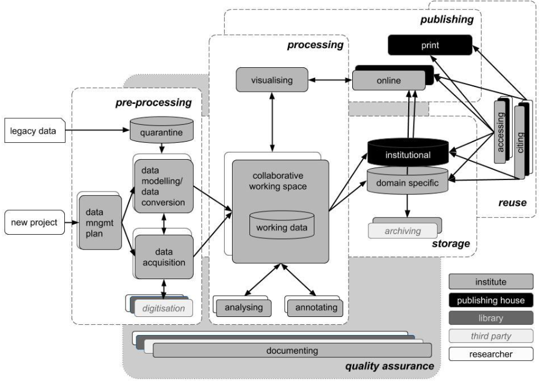

We currently discussing some changes to data documentation.
3.1 What is data documentation?
Data documentation is a central part of data management1 in general and is part of the DFG Guidelines for safeguarding good scientific research practice (code of conduct)
Researchers document all information relevant to the production of a research result as clearly as is required by and is appropriate for the relevant subject area to allow the result to be reviewed and assessed. In general, this also includes documenting individual results that do not support the research hypothesis. The selection of results must be avoided. Where subject-specific recommendations exist for review and assessment, researchers create documentation in accordance with these guidelines. If the documentation does not satisfy these requirements, the constraints and the reasons for them are clearly explained. Documentation and research results must not be manipulated; they are protected as effectively as possible against manipulation.
Explanations:
An important basis for enabling replication is to make available the information necessary to understand the research (including the research data used or generated, the methodological, evaluation and analytical steps taken, and, if relevant, the development of the hypothesis), to ensure that citations are clear, and, as far as possible, to enable third parties to access this information. Where research software is being developed, the source code is documented.
Data documentation is a continuous process and it should start at the beginning (see e.g., Figure 3.1) of each project that collects (any kind of) data

Figure 3.1: Proposed institutional research data management workflow by Wissik & Ďurčo (2015)
Note
In the following, we restrict the term data documentation to the documentation of a single data set.
3.2 Who uses data documentation?
Everybody who works with the data set(s). It serves as a guidance, especially for people who did not collect the data themselves.
3.3 How is data documentation structured?
Data documentation include several parts:
General information on the data set and the usage of it
Documentation of the survey process
Information about the variables (e.g., demographic variables), (achievement) tests, items and scales
Scale level
Item wording
Descriptive Statistics (e.g., \(N, M, SD,Min, Max,...\); for more see below)
Cross-references to other studies
Sources
Bibliography
An example of a table of conents of a so-called “Skalenhandbuch” can be seen in Figure 3.2.
Figure 3.2: Example of table of conents of a scale manual
3.4 Procedure of data documentation
Tip: Data management (ger only)
Recommendations for data management (e.g., planning, generation, preparation & analyses, and publications)
Figure 3.3: Forschungsdatenmanagement in kleinen Forschungsprojekten
3.4.1 Basis
The basis of data documentation are the:
codebooks & questionnaires
the (final) data sets
To get an overview, you should start with carefully reviewing these sources and think about a meaningful structure and order.
for now the template generates only html2 documents
3.4.4 Functions
The following functions were written to make your job a little bit easier.
If you know what you are doing, feel free to change or adjust them.
If you need more or other functions, please write us an email.
3.4.4.1 Table for variable overview (not finished)
The varOverview function translates the general information into a table and has the following arguments:
name: Name of the variable
type: Input is a character: Either variable or scale
itemword: Requires a named list as input. Should contain the names and wording of the items.
questionaire: Input is a character: Which questionnaire?
prompt: Input is a character. Wording of the question,
response: Input is a character. Response format.
cross: Input is a character. Cross-reference to other studies.
source: Input is a character. Potential reference.
note: Input is a character. Room for additional notes.
Show/hide function
varOverview<-function(name,type="variable",itemword=NULL,questionaire=NULL,prompt=NULL,response=NULL,cross=NULL,source=NULL,note=NULL){if(type=="variable"){namDes<-"Name of variable:"}if(type=="scale"){namDes<-"Name of scale:"}if(type=="scale"&is.null(itemword)){stop("please provide the itemwording of the items")}if(!is.null(itemword)){if(is.null(names(itemword))){stop("please provide a named list as input: e.g., list(item1 = c('I like apples.'")}else{itemLab<-names(itemword)itemword<-unlist(itemword)}}else{itemLab<-NULLitemword<-NULL}if(!is.null(questionaire)){questLab<-"Questionaire:"questionaire<-paste0(questionaire, collapse ="; ")}else{questLab<-NULL}if(!is.null(prompt)){promptLab<-"Prompt in Questionaire:"prompt<-paste0(prompt, collapse =":")}else{promptLab<-NULL}if(!is.null(response)){responseLab<-"Response format:"response<-paste0(response, collapse ="; ")}else{responseLab<-NULL}if(!is.null(cross)){crossLab<-"Cross reference:"cross<-paste0(cross, collapse ="; ")}else{crossLab<-NULL}if(!is.null(source)){sourceLab<-"Source:"source<-knitr::asis_output(paste0(source, collapse ="; "))}else{sourceLab<-NULL}if(!is.null(note)){#generalTitel <- "Note:"noteLab<-"Note:"note<-paste0(note, collapse ="; ")}else{#generalTitel <- ""noteLab<-NULL}tempTab<-data.frame("Col1"=c(namDes,questLab,promptLab,responseLab,crossLab,sourceLab,noteLab,"",itemLab),"Col2"=c(name,questionaire,prompt,response,cross,source,note,"",itemword))kableExtra::kbl(tempTab, col.names =NULL, align ="l" ,booktabs =TRUE)|>kableExtra::kable_styling( full_width =TRUE, bootstrap_options =c("hover", "responsive") , latex_options ="HOLD_position")|>kableExtra::column_spec(column =1, width ="12em")}
An example execution.
Show/hide code
varOverview(name ="gender", prompt ="The question in the questionaire...", response =c("0 = male","1 = female","2 = divers"), cross =c("A study", "Another study"), source ="@Kunter2002", note ="Here is room for some notes")
The contVar function is based on the describe function from the psych package (Revelle, 2023) and has the following arguments:
variable: This should be a character or a character vector (name of variable)
data: The data frame
which.stat: Which statistics should be calculated? Default is: N, Mean, SD, Min, Max. Because the function is based on the describe function from psych package, you can also request: trimmed mean, median, mad, skew, kurtosis, standard error.
table: logical. Default is TRUE. Then the output is printed as a table using the kbl function from the kableExtra package (Zhu, 2021). If set to false, the output is printed as a data.frame.
varOverview(name ="age", type ="variable", questionaire ="Student", prompt ="How old are you?", response ="open", cross ="not applicable", source ="not applicable", note ="")contVar(variable ="age", data =exDat)
Table 3.2: Variable: age
(a) Overview
Name of variable:
age
Questionaire:
Student
Prompt in Questionaire:
How old are you?
Response format:
open
Cross reference:
not applicable
Source:
not applicable
Note:
(b) Calculated statistics
Variable
N
Mean
SD
Min
Max
Miss.
age
670
10.03
1.76
5.44
30
10.7%
3.4.4.3 Categorical variables
The catVar function is based on the table function from R (R Core Team, 2023) and has the following arguments:
variable: This should be a character or a character vector (name of variable)
data: The data frame
table: logical. Default is TRUE. Then the output is printed as a table using the kbl function from the kableExtra package (Zhu, 2021). If set to false, the output is printed as a data.frame.
Show/hide function
catVar<-function(variable,data,table=TRUE){# calculate freq. as functioncalcFreq<-function(variable, data){# calc abs and rel freq.tempFreq<-data.frame( abs =table(data[,variable], useNA ="always"))tempFreq$rel<-table(data[,variable], useNA ="always")/length(data[,variable])*100colnames(tempFreq)<-c("var","Absolute","Relative")# calculate sumtempFreq<-rbind(tempFreq,data.frame(var ="Sum",t(colSums(tempFreq[!is.na(tempFreq$var),-1]))))# cosmeticstempFreq$Relative<-paste0(sprintf(tempFreq$Relative, fmt ='%#.1f'),"%")tempTab<-as.data.frame(t(tempFreq[,-1]))colnames(tempTab)<-tempFreq[,1]colnames(tempTab)[is.na(colnames(tempTab))]<-"Miss"tempTab<-as.data.frame(t(sapply(colnames(tempTab),function(x)paste0(tempTab[1,x]," (",tempTab[2,x], ")"), simplify =TRUE)))return(tempTab)}tempFreq<-data.table::rbindlist(sapply(variable,function(x)calcFreq(variable =x, data =data), simplify =FALSE), idcol ="Variable", use.names =T, fill =T)# get colnames to sortcolToSort<-c("Variable", colnames(tempFreq)[!colnames(tempFreq)%in%c("Variable","Miss","Sum"#"Sum (miss)")],"Sum","Miss"#"Sum (miss)",)tempFreq<-tempFreq[,..colToSort]if(table==TRUE){tempTab<-kableExtra::kbl( x =tempFreq, align ="c")|>kableExtra::kable_styling( full_width =TRUE, bootstrap_options =c("hover", "responsive")#,latex_options = "HOLD_position")tempOut<-tempTabtempOut}else{tempOut<-tempFreq[,..colToSort]return(tempOut)}}
An example execution.
Show/hide code
varOverview(name ="edu", type ="variable", questionaire ="Parent", prompt ="Welchen Schulabschluss haben Sie? Bitte geben Sie *nur* Ihren höchsten Abschluss an.", response =c("0 = Kein Schulabschluss","1 = Abschluss einer Sonderschule/Foerderschule","2 = einer Polytechnischen Oberschule nach der 8. Klasse", "3 = Hauptschulabschluss/ Volksschulabschluss","4 = ..."), cross ="NEPS", source ="@Kunter2002", note ="")catVar(variable =c("edu"), data =exDat)
Table 3.3: Variable: Education
(a) Overview
Name of variable:
edu
Questionaire:
Parent
Prompt in Questionaire:
Welchen Schulabschluss haben Sie? Bitte geben Sie *nur* Ihren höchsten Abschluss an.
Response format:
0 = Kein Schulabschluss; 1 = Abschluss einer Sonderschule/Foerderschule; 2 = einer Polytechnischen Oberschule nach der 8. Klasse; 3 = Hauptschulabschluss/ Volksschulabschluss; 4 = ...
Cross reference:
NEPS
Source:
@Kunter2002
Note:
(b) Calculated statistics
Variable
0
1
2
3
4
Sum
Miss
edu
50 (6.7%)
100 (13.3%)
150 (20.0%)
200 (26.7%)
250 (33.3%)
750 (100.0%)
0 (0.0%)
3.4.4.4 Scale score
The scaleScore function is based on the alpha function from the psych package (Revelle, 2023) and has the following arguments:
items: This should be a character vector (name of items) or a named list
data: The data frame
recItems: Numeric vector of the reversed worded items.
recode: logical. Default is FALSE. If TRUE the items in recItems will be recoded.
which.stat: Which statistics should be calculated? Default is: N, Mean, SD, Min, Max. Because the function is based on the describe function from psych package, you can also request: trimmed mean, median, mad, skew, kurtosis, standard error.
table: logical. Default is TRUE. Then the output is printed as a table using the kbl function from the kableExtra package (Zhu, 2021). If set to false, the scale score (and if requested the recoded items) are returned.
Important
The scale score is built based on only valid items (i.e., na.rm = FALSE argument of the rowSums function). This means if one item has missing value, no score is computed.
Show/hide function
scaleScore<-function(items,scaleNameShort=NULL,recItems=NULL,recode=FALSE,data,which.stat=c("N","Mean", "SD","Min", "Max"),table=TRUE){# name checkif(is.null(scaleNameShort)){stop("please provide the short name of the scale (variable name)")}# recode check if(!is.null(recItems)&recode==FALSE){warning("Are the items already recoded?\nIf not, you may use the recode argument.")}if(!is.null(names(items))){items<-names(items)}# recode if necessaryif(recode==T){data[,paste0(items[recItems],"r")]<-sapply(items[recItems],function(x){tempRec<-(max(data[,x])+min(data[,x]))-data[,x]return(tempRec)}, simplify =FALSE)items[recItems]<-paste0(items[recItems],"r")}# compute sumscoredata[,scaleNameShort]<-rowSums(data[,items])/length(items)# calculate descriptivestempDescr<-as.data.frame(psych::describe(data[,c(items,scaleNameShort)]))[tolower(which.stat)]# calculate missing in %missDF<-as.data.frame(colMeans(is.na(data[,c(items,scaleNameShort)]))*100)colnames(missDF)<-"miss"missDF$miss<-paste0(sprintf(missDF$miss, fmt ='%#.1f'),"%")# calculate alpha et altempAlpha<-psych::alpha(data[,items])# extract r.cor & r.droprcordrop<-tempAlpha$item.stats[,c("r.cor", "r.drop")]alpha<-round(tempAlpha$total$raw_alpha,3)# merge dataframestempTab<-merge(tempDescr, missDF, by =0, sort =FALSE)rownames(tempTab)<-tempTab$Row.namestempTab$Row.names<-NULLtempTab<-merge(tempTab, rcordrop, by =0, all.x =T, sort =FALSE)rownames(tempTab)<-NULL# make tablesif(table==TRUE){tempScaleTab<-kableExtra::kbl( x =tempTab, col.names =c("Item", which.stat, "Missing", "$r_{it}$", "$r_{drop}$"), digits =2, align =c("l", rep("c",length(which.stat)), "c", "c", "c"), booktabs =TRUE, format ="html", escape =FALSE)|>kableExtra::kable_styling( full_width =TRUE, bootstrap_options =c("hover", "responsive")#,latex_options = "HOLD_position")|>kableExtra::footnote(general_title ="Cronbachs $\\\\alpha$ = ", general =paste0(alpha), footnote_as_chunk =TRUE, threeparttable =TRUE)|>kableExtra::row_spec(row =nrow(tempTab), background ="#d3d3d3")tempOut<-tempScaleTabtempOut}else{tempOut<-data[,c(items[recItems], scaleNameShort)]print(tempTab)return(tempOut)}}
An example execution.
Before executing the function, we create a named list. Item 3 and 4 are reversed worded items.
Show/hide code
mscItems<-list("msc1"=c("Ich bin gut in Mathematik."),"msc2"=c("Ich war in Mathematik immer gut."),"msc3"=c("Ich habe Verständnisschwierigkeiten bei allem, für das man Mathematik braucht."),"msc4"=c("Ich bin bei Aufgaben, die mathematisches Denkenerfordern, nie gut."))
Then we execute the two functions. because the items 3 and 4 are not recoded in the data set, we have to pass the information to the scaleScore function.
Show/hide code
varOverview(name ="Math Self-concept", type ="scale", itemword =mscItems, prompt ="Wie sehr treffen die folgenden Aussagen auf Sie zu?", response =c("1 = trifft überhaupt nicht zu","2 = trifft eher nicht zu","3 = trifft eher zu","4 = trifft völlig zu"), cross ="TOSCA-R", source ="")scaleScore(items =names(mscItems), scaleNameShort ="msc", recItems =c(3,4), recode =TRUE, data =exDat, table =T)
Table 3.4: Variable Math Self-concept
(a) Overview
Name of scale:
Math Self-concept
Prompt in Questionaire:
Wie sehr treffen die folgenden Aussagen auf Sie zu?
Response format:
1 = trifft überhaupt nicht zu; 2 = trifft eher nicht zu; 3 = trifft eher zu; 4 = trifft völlig zu
Cross reference:
TOSCA-R
Source:
msc1
Ich bin gut in Mathematik.
msc2
Ich war in Mathematik immer gut.
msc3
Ich habe Verständnisschwierigkeiten bei allem, für das man Mathematik braucht.
msc4
Ich bin bei Aufgaben, die mathematisches Denken erfordern, nie gut.
(b) Calculated statistics
Item
N
Mean
SD
Min
Max
Missing
$r_{it}$
$r_{drop}$
msc1
750
2.52
0.74
1
4
0.0%
0.72
0.67
msc2
680
2.54
0.72
1
4
9.3%
0.67
0.62
msc3r
750
2.51
0.75
1
4
0.0%
0.82
0.74
msc4r
750
2.52
0.75
1
4
0.0%
0.80
0.73
msc
680
2.53
0.61
1
4
9.3%
NA
NA
Cronbachs $\\alpha$ = 0.851
3.4.4.5 Clean character variables
The cleanStr function is designed to clean strings and has the following arguments:
stringToClean: This should be a character.
pattern: The pattern which should be replaced. Can be character vector.
replacement: The replacement. A character with length = 1.
replaceNA: logical. Should NAs be replaced?
replaceNAval: If replaceNA == TRUE. The replacement of NA values. Default is: "Unknown"
as.fac: logical. Output of the function (character or factor) Default is FALSE.
print: logical.
Show/hide function
cleanStr<-function(stringToClean, pattern=NULL, replacement="Unknown",replaceNA=TRUE,replaceNAval="Unknown",as.fac=FALSE,print=TRUE){if(length(replacement)>1|length(replaceNAval)>1){stop("Values can only be replaced by one value. length > 1")}if(!is.character(stringToClean)){stop("input is no character")}else{outStr<-stringToClean}if(replaceNA==TRUE){outStr[is.na(outStr)]<-replaceNAvalmissMess<-paste0("Missing values (NA) are replaced with: '", replaceNAval, "'")}else{missMess<-NULL}outStr[outStr%in%pattern]<-replacementif(print==TRUE){message("Input\n")print(table(stringToClean, useNA ="always"))message("Output\n")print(table(outStr, useNA ="always"))message("\nThis is what happened:")cat("The following pattern(s): ",paste0(paste0(pattern, collapse =", "),"\nwas/were replaced with: ",replacement), "\n\n",missMess)}if(as.fac==FALSE){return(outStr)}else{outFac<-as.factor(outStr)return(outFac)}}
R Core Team. (2023). R: A language and environment for statistical computing. R Foundation for Statistical Computing. https://www.R-project.org/
This is (mainly) because there are some issues with the kableExtra package (Zhu, 2021) and latex implementation (i.e., format: pdf) in Quarto.↩︎
Source Code
# General information on data documentation::: {.callout-important}We currently discussing some changes to data documentation.:::## What is data documentation?- Data documentation is a central part of data management^[see also here: [https://www.forschungsdaten-bildung.de/](https://www.forschungsdaten-bildung.de/daten-managen?la=en)] in general and is part of the [DFG Guidelines](https://www.dfg.de/en/research_funding/principles_dfg_funding/good_scientific_practice/) for safeguarding good scientific researchpractice (code of conduct) - Guideline 12: [Documentation](https://wissenschaftliche-integritaet.de/en/code-of-conduct/documentation/) (for more see below)::: {.callout-note appearance="simple" collapse="true" title="Guideline 12: Documentation"}> Researchers document all information relevant to the production of a research result as clearly as is required by and is appropriate for the relevant subject area to allow the result to be reviewed and assessed. In general, this also includes documenting individual results that do not support the researchhypothesis. The selection of results must be avoided. Where subject-specific recommendations exist for review and assessment, researchers create documentation in accordance with these guidelines.If the documentation does not satisfy these requirements, the constraints and the reasons for them are clearly explained. Documentation and research results must not be manipulated; they areprotected as effectively as possible against manipulation.**Explanations:**> An important basis for enabling replication is to make available the information necessary to understand the research (including the research data used or generated, the methodological, evaluation and analytical steps taken, and, if relevant, the development of the hypothesis), to ensure that citations are clear, and, as far as possible, to enable third parties to access this information. Where research software is being developed, the source code is documented. :::- Data documentation is a continuous process and it should start at the beginning (see e.g., @fig-research-management) of each project that collects (any kind of) data{#fig-research-management width="90%"}::: {.callout-note}In the following, we restrict the term data documentation to the documentation of a single data set.:::## Who uses data documentation? Everybody who works with the data set(s). It serves as a guidance, especially for people who did not collect the data themselves. ## How is data documentation structured? Data documentation include several parts:1. General information on the data set and the usage of it2. Documentation of the survey process3. Information about the variables (e.g., demographic variables), (achievement) tests, items and scales - Scale level - Item wording - Descriptive Statistics (e.g., $N, M, SD,Min, Max,...$; for more see [below](#item-analy-descr.qmd)) - Cross-references to other studies - Sources4. BibliographyAn example of a table of conents of a so-called *"Skalenhandbuch"* can be seen in @fig-example-scale-manual.{#fig-example-scale-manual width=80% height=5in}## Procedure of data documentation::: {.callout-tip collapse="true" appearance="simple" title="Tip: Data management (ger only)"}Recommendations for data management (e.g., planning, generation, preparation & analyses, and publications) - FDM-kleine Projekte.pdf){#fig-data-manage width=80% height=5in}:::### BasisThe basis of data documentation are the:- codebooks & questionnaires - the (final) data sets To get an overview, you should start with carefully reviewing these sources and think about a meaningful structure and order. ::: {.callout-tip appearance="simple" collapse="false" title="Tip: How to design codebooks?"}You can find some information at the [https://datawizkb.leibniz-psychology.org](https://datawizkb.leibniz-psychology.org/index.php/during-data-collection/what-should-i-know-about-codebooks/) website. :::### Order- It is advisable to group the variables according to their content. In the following example variable clusters are listed: - Socio-demographic variables (e.g., age, sex, family background, income, household, ...) - Tests (e.g., school achievement tests, tests on cognitive ability) - Psycho-social variables (e.g., Self-concepts, motivation, personality) - ... - Also, related scales should be reported together within a respective variable cluster (e.g., math, English and German self-concept scales) - Discuss the concrete order of the variables with your supervisor- Names of variables, items and scales **must be identical** across codebooks, questionaires, and data sets### Template {#template}::: {.callout-important}You should always use a template! You can find it/them on the network drive L, too.:::There are two options:1. Calculate the required statistics and transfer the values into one of the millions word templates (not recommended)2. Use the `Quarto`[template](template-scale-manual.qmd) (recommended) - for now the template generates *only* html^[This is (mainly) because there are some issues with the `kableExtra` package [@R-kableExtra] and `latex` implementation (i.e., `format: pdf`) in `Quarto`.] documents ### Functions {#functions}```{r}#| label: read-exampleDat#| echo: falseexDat <-readRDS("exampleDat.RDS")```The following functions were written to make your job a little bit easier. - If you know what you are doing, feel free to change or adjust them. - If you need more or other functions, please write us an [email](mailto:sven.rieger@uni-tuebingen.de).```{=html}<style type="text/css">caption, .table-caption { text-align: left;}</style>``````{=html}<style type="text/css">.table-hover > tbody > tr:hover { background-color: #d3d3d3;}</style>```#### Table for variable overview (not finished)<!-- add recoded items -->The `varOverview` function translates the general information into a table and has the following arguments:- `name`: Name of the variable- `type`: Input is a `character`: Either `variable` or `scale`- `itemword`: Requires a named `list` as input. Should contain the names and wording of the items.- `questionaire`: Input is a `character`: Which questionnaire? - `prompt`: Input is a `character`. Wording of the question,- `response`: Input is a `character`. Response format.- `cross`: Input is a `character`. Cross-reference to other studies.- `source`: Input is a `character`. Potential reference.- `note`: Input is a `character`. Room for additional notes.```{r}#| label: table-function#| code-fold: true#| code-summary: "Show/hide function"#| echo: truevarOverview <-function ( name,type ="variable",itemword =NULL,questionaire =NULL,prompt =NULL,response =NULL,cross =NULL,source =NULL,note =NULL) {if (type =="variable") { namDes <-"Name of variable:" }if (type =="scale") { namDes <-"Name of scale:" }if (type =="scale"&is.null(itemword) ) {stop("please provide the itemwording of the items") } if(!is.null(itemword)) {if ( is.null(names(itemword)) ) {stop("please provide a named list as input: e.g., list(item1 = c('I like apples.'") } else { itemLab <-names(itemword) itemword <-unlist(itemword) } } else { itemLab <-NULL itemword <-NULL }if (!is.null(questionaire)) { questLab <-"Questionaire:" questionaire <-paste0(questionaire, collapse ="; ") } else { questLab <-NULL }if (!is.null(prompt)) { promptLab <-"Prompt in Questionaire:" prompt <-paste0(prompt, collapse =":") } else { promptLab <-NULL }if (!is.null(response)) { responseLab <-"Response format:" response <-paste0(response, collapse ="; ") } else { responseLab <-NULL }if (!is.null(cross)) { crossLab <-"Cross reference:" cross <-paste0(cross, collapse ="; ") } else { crossLab <-NULL }if (!is.null(source)) { sourceLab <-"Source:" source <- knitr::asis_output(paste0(source, collapse ="; ")) } else { sourceLab <-NULL }if (!is.null(note)) {#generalTitel <- "Note:" noteLab <-"Note:" note <-paste0(note, collapse ="; ") } else {#generalTitel <- "" noteLab <-NULL } tempTab <-data.frame("Col1"=c(namDes, questLab, promptLab, responseLab, crossLab, sourceLab, noteLab,"", itemLab),"Col2"=c(name, questionaire, prompt, response, cross, source, note,"", itemword) ) kableExtra::kbl(tempTab,col.names =NULL,align ="l" ,booktabs =TRUE ) |> kableExtra::kable_styling(full_width =TRUE,bootstrap_options =c("hover", "responsive") , latex_options ="HOLD_position" ) |> kableExtra::column_spec(column =1, width ="12em")}```An example execution.```{r}#| label: tbl-demo-table-function#| echo: true#| tbl-cap: "Variable: gender"#| output: asisvarOverview(name ="gender",prompt ="The question in the questionaire...",response =c("0 = male","1 = female","2 = divers"),cross =c("A study", "Another study"),source ="@Kunter2002",note ="Here is room for some notes")```::: {.callout-note}The reference is not rendered correctly. This is a known bug: see here: <https://github.com/quarto-dev/quarto-cli/issues/3340> and will be hopefully solved in the next release.:::#### Continuous variablesThe `contVar` function is based on the `describe` function from the `psych` package [@R-psych] and has the following arguments:- `variable`: This should be a character or a character vector (name of variable)- `data`: The data frame- `which.stat`: Which statistics should be calculated? Default is: `N`, `Mean`, `SD`, `Min`, `Max`. Because the function is based on the `describe` function from `psych` package, you can also request: `trimmed mean`, `median`, `mad`, `skew`, `kurtosis`, `standard error`.- `table`: logical. Default is `TRUE`. Then the output is printed as a table using the `kbl` function from the `kableExtra` package [@R-kableExtra]. If set to false, the output is printed as a `data.frame`.```{r}#| label: contVar-function#| echo: true#| code-fold: true#| code-summary: "Show/hide function"contVar <-function ( variable, data,which.stat =c("N","Mean", "SD","Min", "Max"),table =TRUE) {# calculate descriptives tempDescr <-as.data.frame( psych::describe( data[,variable] ) )[tolower(which.stat)] tempDescr$varNam <- variablerownames(tempDescr) <-NULL# calculate missing in %if ( length(variable) ==1 ) { missDF <-as.data.frame(mean(is.na(data[,variable]))*100) } else { missDF <-as.data.frame(colMeans(is.na(data[,variable]))*100) }colnames(missDF) <-"miss" tempDescr$miss <-paste0(sprintf(missDF$miss,fmt ='%#.1f'),"%")if ( table ==TRUE ) { tempTab <- kableExtra::kbl(x = tempDescr[,c("varNam",tolower(which.stat),"miss")],col.names =c("Variable", which.stat, "Miss."),row.names =FALSE,digits =2,align =c("l", rep("c",length(which.stat)), "c") ,booktabs =TRUE#,format = "html" ) |> kableExtra::kable_styling(full_width =TRUE,bootstrap_options =c("hover", "responsive") ,latex_options ="HOLD_position" ) tempOut <- tempTab tempOut } else { tempOut <- tempDescr[,c("varNam",tolower(which.stat),"miss")]return(tempOut) }}```An example execution.```{r}#| label: tbl-demo-contVar-function#| echo: true#| tbl-cap: "Variable: age"#| tbl-subcap: ["Overview", "Calculated statistics"]#| output: asisvarOverview(name ="age",type ="variable",questionaire ="Student",prompt ="How old are you?",response ="open",cross ="not applicable",source ="not applicable",note ="")contVar(variable ="age", data = exDat)```#### Categorical variablesThe `catVar` function is based on the `table` function from R [@R-base] and has the following arguments:- `variable`: This should be a character or a character vector (name of variable)- `data`: The data frame- `table`: logical. Default is `TRUE`. Then the output is printed as a table using the `kbl` function from the `kableExtra` package [@R-kableExtra]. If set to false, the output is printed as a `data.frame`.```{r}#| label: catVar-function#| echo: true#| code-fold: true#| code-summary: "Show/hide function"catVar <-function ( variable, data,table =TRUE) {# calculate freq. as function calcFreq <-function ( variable, data) {# calc abs and rel freq. tempFreq <-data.frame( abs =table(data[,variable],useNA ="always")) tempFreq$rel <-table(data[,variable],useNA ="always")/length(data[,variable])*100colnames(tempFreq) <-c("var","Absolute","Relative")# calculate sum tempFreq <-rbind(tempFreq,data.frame(var ="Sum",t(colSums(tempFreq[!is.na(tempFreq$var),-1]))) )# cosmetics tempFreq$Relative <-paste0(sprintf(tempFreq$Relative,fmt ='%#.1f'),"%") tempTab <-as.data.frame(t(tempFreq[,-1]))colnames(tempTab) <- tempFreq[,1]colnames(tempTab)[is.na(colnames(tempTab))] <-"Miss" tempTab <-as.data.frame(t(sapply(colnames(tempTab),function(x) paste0(tempTab[1,x]," (", tempTab[2,x], ")"),simplify =TRUE) ) )return(tempTab) } tempFreq <- data.table::rbindlist(sapply(variable,function(x) calcFreq(variable = x, data = data),simplify =FALSE),idcol ="Variable", use.names = T, fill = T)# get colnames to sort colToSort <-c("Variable", colnames(tempFreq)[!colnames(tempFreq) %in%c("Variable","Miss","Sum"#"Sum (miss)" )],"Sum","Miss"#"Sum (miss)", ) tempFreq <- tempFreq[,..colToSort]if ( table ==TRUE ) { tempTab <- kableExtra::kbl(x = tempFreq,align ="c" ) |> kableExtra::kable_styling(full_width =TRUE,bootstrap_options =c("hover", "responsive")#,latex_options = "HOLD_position" ) tempOut <- tempTab tempOut } else { tempOut <- tempFreq[,..colToSort]return(tempOut) }}```An example execution.```{r}#| label: tbl-edu#| eval: true#| tbl-cap: "Variable: Education"#| tbl-subcap:#| - "Overview"#| - "Calculated statistics"#| results: asisvarOverview(name ="edu",type ="variable",questionaire ="Parent",prompt ="Welchen Schulabschluss haben Sie? Bitte geben Sie *nur* Ihren höchsten Abschluss an.",response =c("0 = Kein Schulabschluss","1 = Abschluss einer Sonderschule/Foerderschule","2 = einer Polytechnischen Oberschule nach der 8. Klasse", "3 = Hauptschulabschluss/ Volksschulabschluss","4 = ..."),cross ="NEPS",source ="@Kunter2002",note ="")catVar(variable =c("edu"),data = exDat)```#### Scale scoreThe `scaleScore` function is based on the `alpha` function from the `psych` package [@R-psych] and has the following arguments:- `items`: This should be a character vector (name of items) or a named list- `data`: The data frame- `recItems`: Numeric vector of the reversed worded items. - `recode`: logical. Default is `FALSE`. If `TRUE` the items in `recItems` will be recoded.- `which.stat`: Which statistics should be calculated? Default is: `N`, `Mean`, `SD`, `Min`, `Max`. Because the function is based on the `describe` function from `psych` package, you can also request: `trimmed mean`, `median`, `mad`, `skew`, `kurtosis`, `standard error`.- `table`: logical. Default is `TRUE`. Then the output is printed as a table using the `kbl` function from the `kableExtra` package [@R-kableExtra]. If set to false, the scale score (and if requested the recoded items) are returned.::: {.callout-important}The scale score is built based on only valid items (i.e., `na.rm = FALSE` argument of the `rowSums` function). This means if one item has missing value, no score is computed.:::```{r}#| label: scales-function#| echo: true#| eval: true#| code-fold: true#| code-summary: "Show/hide function"scaleScore <-function ( items,scaleNameShort =NULL,recItems =NULL,recode =FALSE, data,which.stat =c("N","Mean", "SD","Min", "Max"),table =TRUE) {# name checkif (is.null(scaleNameShort)) {stop("please provide the short name of the scale (variable name)") }# recode check if (!is.null(recItems) & recode ==FALSE) {warning("Are the items already recoded?\nIf not, you may use the recode argument.") }if (!is.null(names(items))) { items <-names(items) }# recode if necessaryif ( recode == T ) { data[,paste0(items[recItems],"r")] <-sapply( items[recItems],function(x) { tempRec <- (max(data[,x]) +min(data[,x])) - data[,x]return(tempRec) }, simplify =FALSE) items[recItems] <-paste0(items[recItems],"r") }# compute sumscore data[,scaleNameShort] <-rowSums(data[,items]) /length(items)# calculate descriptives tempDescr <-as.data.frame( psych::describe( data[,c(items,scaleNameShort)] ) )[tolower(which.stat)]# calculate missing in % missDF <-as.data.frame(colMeans(is.na(data[,c(items,scaleNameShort)]))*100)colnames(missDF) <-"miss" missDF$miss <-paste0(sprintf(missDF$miss,fmt ='%#.1f'),"%")# calculate alpha et al tempAlpha <- psych::alpha( data[,items] )# extract r.cor & r.drop rcordrop <- tempAlpha$item.stats[,c("r.cor", "r.drop")] alpha <-round(tempAlpha$total$raw_alpha,3)# merge dataframes tempTab <-merge(tempDescr, missDF, by =0, sort =FALSE) rownames(tempTab) <- tempTab$Row.names tempTab$Row.names <-NULL tempTab <-merge(tempTab, rcordrop, by =0, all.x = T, sort =FALSE)rownames(tempTab) <-NULL# make tablesif ( table ==TRUE ) { tempScaleTab <- kableExtra::kbl(x = tempTab,col.names =c("Item", which.stat, "Missing", "$r_{it}$", "$r_{drop}$"),digits =2,align =c("l", rep("c",length(which.stat)), "c", "c", "c"),booktabs =TRUE,format ="html",escape =FALSE ) |> kableExtra::kable_styling(full_width =TRUE,bootstrap_options =c("hover", "responsive")#,latex_options = "HOLD_position" ) |> kableExtra::footnote(general_title ="Cronbachs $\\\\alpha$ = ",general =paste0(alpha),footnote_as_chunk =TRUE,threeparttable =TRUE) |> kableExtra::row_spec(row =nrow(tempTab),background ="#d3d3d3") tempOut <- tempScaleTab tempOut } else { tempOut <- data[,c(items[recItems], scaleNameShort)]print(tempTab)return(tempOut) }}```An example execution.1. Before executing the function, we create a named list. Item 3 and 4 are reversed worded items.```{r}#| label: named-list-mscmscItems <-list("msc1"=c("Ich bin gut in Mathematik."),"msc2"=c("Ich war in Mathematik immer gut."),"msc3"=c("Ich habe Verständnisschwierigkeiten bei allem, für das man Mathematik braucht."),"msc4"=c("Ich bin bei Aufgaben, die mathematisches Denkenerfordern, nie gut."))```2. Then we execute the two functions. because the items 3 and 4 are not recoded in the data set, we have to pass the information to the `scaleScore` function.```{r}#| label: tbl-msc#| echo: true#| eval: true#| tbl-cap: "Variable Math Self-concept"#| tbl-subcap: ["Overview", "Calculated statistics"]varOverview(name ="Math Self-concept",type ="scale",itemword = mscItems,prompt ="Wie sehr treffen die folgenden Aussagen auf Sie zu?",response =c("1 = trifft überhaupt nicht zu","2 = trifft eher nicht zu","3 = trifft eher zu","4 = trifft völlig zu"),cross ="TOSCA-R",source ="")scaleScore(items =names(mscItems),scaleNameShort ="msc",recItems =c(3,4),recode =TRUE,data = exDat,table = T)```#### Clean character variablesThe `cleanStr` function is designed to clean strings and has the following arguments:- `stringToClean`: This should be a character.- `pattern`: The pattern which should be replaced. Can be character vector.- `replacement`: The replacement. A character with length = 1.- `replaceNA`: logical. Should `NA`s be replaced?- `replaceNAval`: If `replaceNA` == `TRUE`. The replacement of `NA` values. Default is: `"Unknown"`- `as.fac`: logical. Output of the function (`character` or `factor`) Default is `FALSE`.- `print`: logical.```{r}#| label: cleanStr-function#| echo: true#| eval: true#| code-fold: true#| code-summary: "Show/hide function"cleanStr <-function ( stringToClean, pattern =NULL, replacement ="Unknown",replaceNA =TRUE,replaceNAval ="Unknown",as.fac =FALSE,print =TRUE) {if ( length(replacement) >1|length(replaceNAval) >1 ) {stop("Values can only be replaced by one value. length > 1") }if ( !is.character(stringToClean) ) {stop("input is no character") } else { outStr <- stringToClean }if ( replaceNA ==TRUE ) { outStr[is.na(outStr)] <- replaceNAval missMess <-paste0("Missing values (NA) are replaced with: '", replaceNAval, "'") } else { missMess <-NULL } outStr[outStr %in% pattern] <- replacementif (print ==TRUE ) {message("Input\n")print( table(stringToClean, useNA ="always") )message("Output\n")print( table(outStr, useNA ="always") )message("\nThis is what happened:")cat("The following pattern(s): ",paste0(paste0(pattern, collapse =", "),"\nwas/were replaced with: ", replacement), "\n\n", missMess) }if ( as.fac ==FALSE ) {return(outStr) } else { outFac <-as.factor(outStr)return(outFac) }}``````{r}#| label: save-functions#| echo: false#| eval: falsescaleManualFunctions <-list(varOverview = varOverview,catVar = catVar,contVar = contVar,scaleScore = scaleScore,cleanStr = cleanStr )save(scaleManualFunctions,file ="scaleManualFunctions.Rdata")```